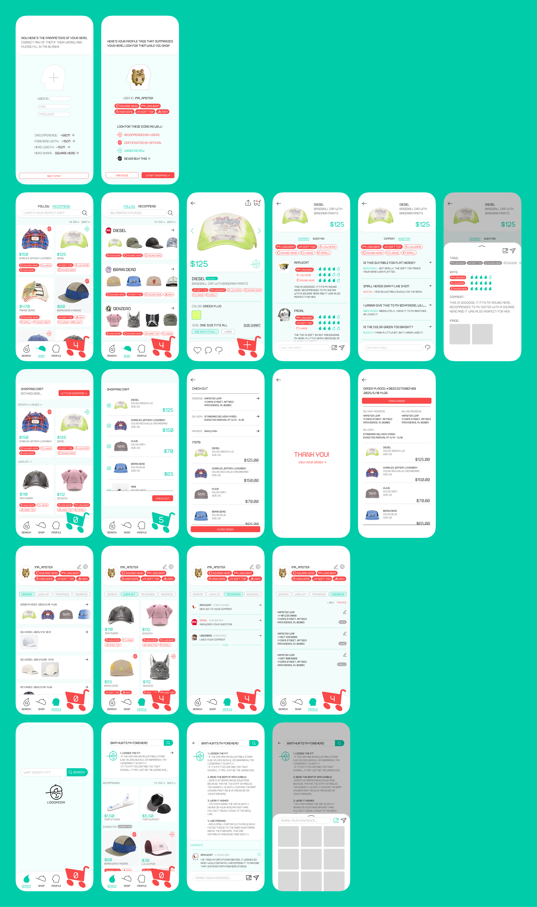
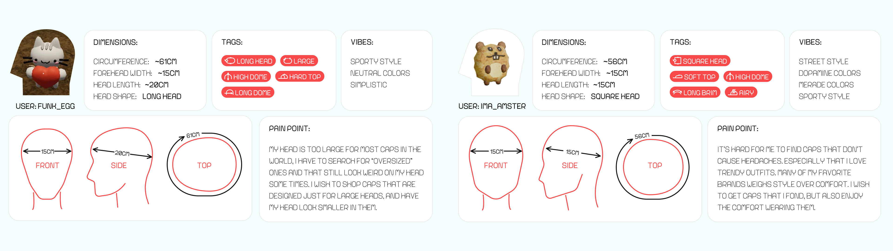
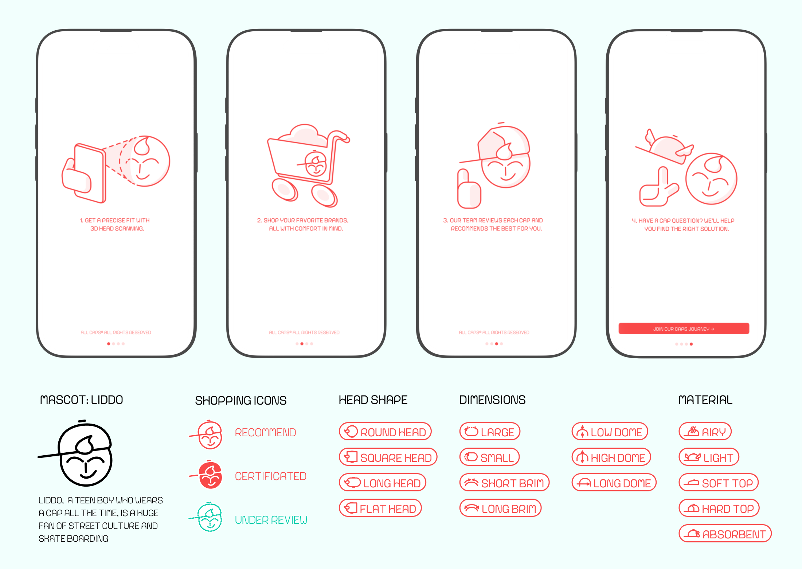
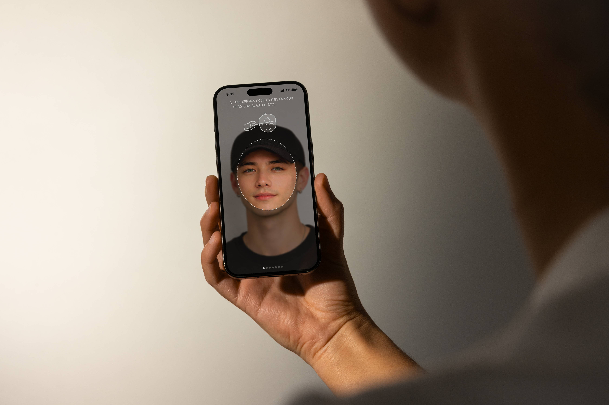
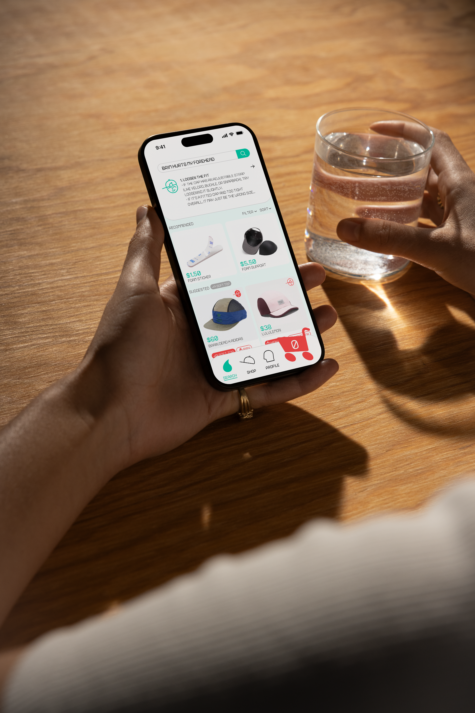

App Design / UIUX / Motion Graphics / Variable Typeface design
Spring 2025
ALL CAPS is a caps-only shopping platform designed to create a more personalized and comfortable cap shopping experience. Many existing shopping platforms provide little information about cap fit and sizing, making it difficult for users to know whether a cap will actually be comfortable before purchasing. ALL CAPS aims to address this gap by helping users better understand fit and find caps that match their head shape.
Problem: Finding a cap that fits comfortably is difficult because most shopping platforms lack clear information about sizing and head shape.


The idea for began with my own difficulty finding a cap that fits comfortably without pressing on the forehead. To understand whether this was a personal issue or a broader problem, I conducted interviews with multiple cap wearers. Many shared similar frustrations: hats often feel too tight, sizing information is unclear, and it is difficult to predict how a cap will actually fit when shopping online. These conversations revealed that finding a well-fitting cap is a common and unresolved problem.
Further research showed that more than 40% of adults struggle to find hats that fit properly due to differences in head size and shape. Most hats are sold as one-size-fits-all with incomplete or inconsistent sizing information, making comparison difficult. In addition, product photos and measurements on many shopping platforms do not accurately represent the actual item, often leading to dissatisfaction and poor purchasing experiences.


1. Head Scan & Fit Filtering
The app begins with a 3D scan of the user’s head, generating detailed measurements and fit labels. These data points allow users to quickly filter hats that match their specific head shape and size.
2. Transparent Product Information
All merchants on the platform are required to provide complete sizing specifications. A professional review team evaluates newly listed products and assigns certification levels using Liddo icons, helping users make more confident purchasing decisions.
3. AI Search & Community Knowledge
An AI-powered search engine answers questions related to ill-fitting caps. Users can also share experiences and solutions through comments, gradually building a community-driven knowledge base for cap fit and comfort.



ALL- CAPS is a double entendre: it refers both to “all capital letters” and “all caps” as in baseball caps. This dual meaning is echoed in the custom variable typeface I designed for the app — a fully uppercase font whose letterforms subtly incorporate cap-like silhouettes, creating a cohesive connection between the app’s name and its visual identity.